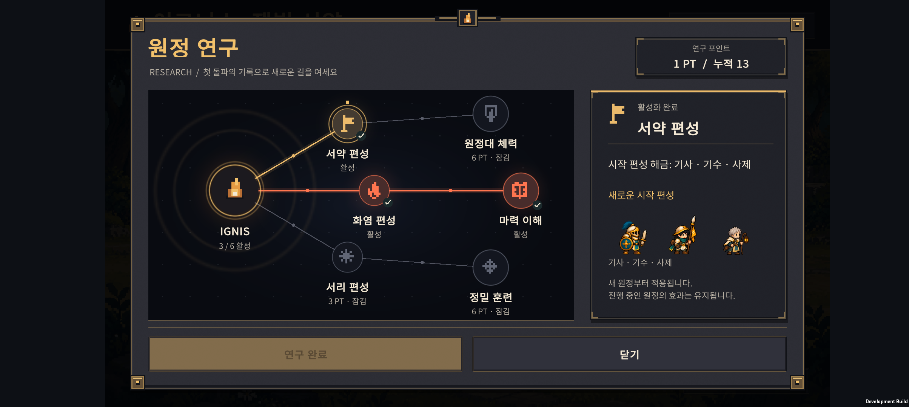
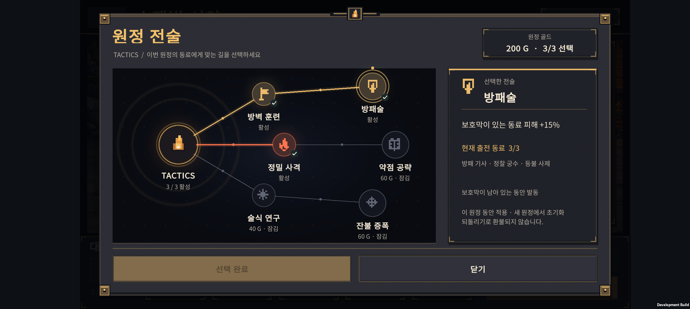
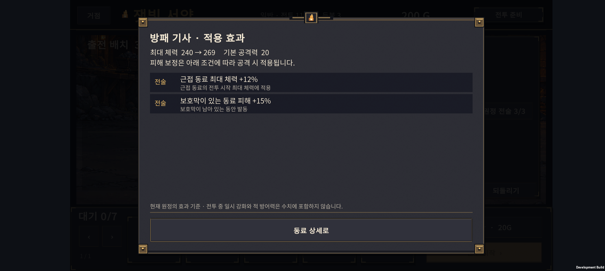
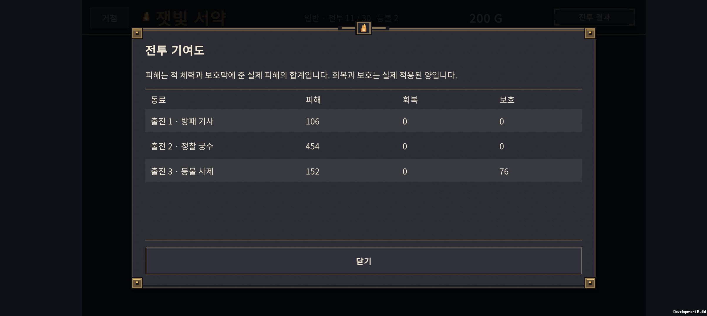

2026-10-24 · IGNIS: ASHEN OATH
연구·전술을 노드와 경로가 보이는 보드로 바꾸고, 현재 동료에게 적용되는 효과와 전투 기여도를 추가했다. Normal 30전투는 실제 패배·재도전·재화 지출을 포함해 비교했다. 여러 결합 빌드의 완주를 확인했지만 H-01·H-05는 추가 조정이 필요하다.
1. 연구와 전술 화면

- 중앙 IGNIS에서 세 갈래로 뻗는 원형 노드와 연결선으로 구성했다. 실제 구매 노드는 기존대로 6개이며 연결선 위의 작은 점은 장식이다.
- 배운 경로는 갈래별 색과 밝은 선, 잠긴 경로는 얇은 회색 선으로 표시한다. 선택한 노드는 바깥 고리, 배운 노드는 체크 표시를 갖는다.
- 오른쪽은 선택한 연구 설명과 시작 편성, 아래는 일정한 여백을 둔 구매·닫기 버튼이다. 노드를 누르면 선택하고, 아래 버튼으로 구매를 확정한다.
- 아이온2 데바니온의 경로·활성 상태·선택 상세를 함께 보는 구성을 참고했다. 원작의 이미지·아이콘은 사용하지 않고 자체 도형과 도트 문양으로 구현했다. 참고 화면이 포함된 인벤 기사.
- 첫 기기 확인에서 연결선이 화면 밖으로 튀는 결함이 있었다. 화면 배율이 적용된 GUI에서 회전 기준점이 어긋난 것이 원인이었다. 논리 좌표의 이동·회전을 기존 화면 행렬에 합성하도록 수정하고 최종 APK의 연구·전술 양쪽에서 노드에 정확히 연결됨을 확인했다. 위 이미지는 수정 후 실기기 화면이다.

전술 상세는 현재 출전 동료 중 적용 가능한 인원·이름과 발동 조건을 보여준다. 보호막 잔존, 표식·둔화 대상, 직접 공격 기술, 화상 등 조건을 구분한다. 적용 가능한 동료가 없으면 알려준다. 기본 40G는 소환 2회, 상위 60G는 소환 3회 비용으로 안내한다.
영구 연구의 다음 새 원정 적용, 전술 최대 3개, 원정 종료 시 초기화, 구매 환불 불가, 선행 노드와 단계 조건은 v0.32 규칙을 유지한다. 현재 6노드는 첫 범위이며 대규모 트리를 전부 구현한 상태는 아니다.
2. 효과와 전투 기여도

동료 상세의 적용 효과에서 기본 최대 체력과 연구·전술 적용 후 최대 체력을 비교한다. 실제 전투 유닛 생성 경로로 계산하며, 조건부 피해 증가를 기본 공격력 숫자에 섞지 않는다. 진행 중인 원정은 시작 당시 보관한 연구 목록으로 표시하므로 거점에서 나중에 산 연구가 잘못 표시되지 않는다.

전투 결과의 전투 기록은 출전 동료별 피해·회복·보호를 보여준다.
| 항목 | 집계 기준 |
|---|---|
| 피해 | 적 체력과 보호막에 적용한 실제 피해, 초과 피해 제외 |
| 회복 | 실제 회복한 체력 |
| 보호 | 제공한 보호막이 실제로 흡수한 피해 |
전투 이벤트를 관찰하므로 난수나 전투 결과를 바꾸지 않는다. 기록은 현재 앱 실행 중 완료한 같은 원정의 마지막 전투만 제공한다. 앱을 재시작하면 기여도 기록은 사라지며, 새 전투·새 원정에 이전 표가 붙지 않는다. 영구 기록 저장은 후속 범위다.
3. 밸런스 변경
실제 전투 수치 변경은 29전투 왕궁 근위의 공격력 107.8 → 90이다. 체력·보호막·다른 적은 그대로다. H-04 조합이 전투 29까지 도달하고도 이 지점에서 무너지는 현상을 확인해 해당 병목만 조정했다. 전술 가격과 효과는 유지했다.
조정용 Balanced 시드 1~20에서 H-04·전술 미구매 완주는 1/20 → 3/20이 되었고, 일반 최종 진화 편성은 13/20을 유지했다. 이후 수치를 고정하고 별도 시드로 아래 검증을 진행했다.
4. 실제 원정 1,120회 비교
시드 19001~19040, 성장 정책 Balanced, 7개 편성 정책 × 4개 지출 정책 × 각 40회다. 아래 값은 각 조건의 30전투 완주 횟수 / 40회다. 고정된 자동 플레이 정책의 비교이며 사람의 승률을 뜻하지 않는다.
| 목표 편성 | 전술 없음 | 일찍 구매 | 11전투부터 구매 | 편성에 맞춘 기본 1개 |
|---|---|---|---|---|
| 일반 최종 진화 | 15 | 18 | 18 | 12 |
| H-01 · 화염+기사 | 0 | 0 | 1 | 0 |
| H-02 · 기사+사제 | 6 | 5 | 7 | 5 |
| H-03 · 궁수+서리 | 1 | 0 | 4 | 7 |
| H-04 · 화염+서리 | 3 | 0 | 11 | 0 |
| H-05 · 기수+사제 | 0 | 0 | 0 | 0 |
| H-06 · 궁수+기수 | 0 | 2 | 7 | 2 |
- H 계열의 모든 완주는 해당 결합체를 실제로 출전시킨 원정이었다. 보고서의
completedWithHybrid와completedWithoutHybrid로 구분한다. - H-02·H-03·H-04·H-06에서 완주 경로를 확인했다. H-04는 늦은 전술 구매, H-03는 편성에 맞춘 단일 전술에서 결과가 개선됐다.
- 일찍 전술을 사는 것이 언제나 손해는 아니다. 일반 최종 진화 편성은 15 → 18회였고, H-03·H-04에서는 성장 재료 부족과 지출 순서가 불리하게 작용할 수 있다. 현재 가격을 일괄 인하하지 않았다.
- H-01은 한 조건에서 1회, H-05는 전 조건에서 0회다. 두 빌드의 결합 시점·공격 기여·재료 소비를 다음에 다뤄야 한다. 모든 빌드가 균형 잡혔다고 볼 수 없다.
검사 방식
새 원정 생성 → 정상 소환·성장·진화·결합·배치·전술 구매 → 전투 → 실제 승패 처리 → 다음 준비를 실행한다. 준비마다 저장·복원을 거치고, 패배하면 골드를 주지 않고 등불을 차감하며 같은 전투를 재도전한다. 재도전 배치를 바꾸고 75초 미완료는 패배로 처리한다. 같은 시드의 재현성도 검사한다.
예전 HybridBalanceProbe는 패배한 전투 뒤에도 승리 보상을 가정해 후반 구간을 비교하므로 그 결과를 완주 횟수로 읽으면 안 된다. 이번 표는 별도 EndToEndBalanceProbe의 실제 원정 결과다. 영구 연구로 능력을 올린 계정 전체에 대한 검증은 별도 범위다.
./tests/ExpeditionRun/run-end-to-end-balance.ps1 -FirstSeed 19001 -Count 40 -GrowthOrder Balanced -Spending all -ReportPath docs/design-v0.33/balance-holdout.json
이번 보고서는 완주 데이터를 모은 뒤 기존 시드 결과에서 결합체 동반 완주/미동반 완주 집계 필드를 추가했다. 같은 집계를 생성기에도 반영했으며 추가 전투를 돌리거나 이 시드에 맞춰 수치를 다시 조정하지 않았다.
5. 검증과 기기 상태
| 검사 | 결과 |
|---|---|
| 원정 Core | 2,052개 검사 통과 |
| 영구 연구·원정 전술 | 61개 검사 통과 |
| 직업 전투 | 3,011개 검사 통과 |
| 전투 기여도 | 6개 검사 통과: 이벤트 구분·중복·적 제외·구독 해제·실제 피해 등 |
| Unity 저장 JSON | 340개 검사 통과, 이전 저장 호환 유지 |
| Unity 드래그 입력·JSON | 17개 검사 통과 |
| 최종 Android 빌드 | Unity 6000.3.24f1, 종료 코드 0 |
| Galaxy Buddy2 | 연구 선택·선행 잠금·구매, 전술 구매·한도, 효과 상세, 전투 기여도, 재시작 후 구매 유지 확인 |
| 연결선 | 최종 APK에서 연구·전술 모두 시각 확인 |
UI 확인에는 임시 11전투 저장을 사용했다. 해당 화면의 승패는 밸런스 표에 포함하지 않는다. 테스트 전 원본 PlayerPrefs 전체를 백업했고, 종료 후 바이트 단위로 동일하게 복원했다. 사용자 원정·성과·설정은 보존했다. 마지막 앱 실행 로그 범위에서 Unity 예외나 AndroidRuntime 크래시는 발견되지 않았다. 장시간 성능·발열 및 사람의 Normal 30 연속 플레이는 이번 검증 범위가 아니다.
최종 APK: unity/Builds/Android/expedition-combat-prototype.apk
SHA-256: A3C86E1675660A4CA13CDEA30B77CDEABC925BAA4059534A48FE1666E62510C5
6. 다음 작업
- H-01·H-05의 결합 전후 손익과 실제 전투 역할을 개선한다.
- 플레이어가 Normal 30을 진행하며 소환·성장·전술 선택을 이해하고 고민하게 되는지 확인한다.
- 그 결과에 따라 연구 분기 확대와 유물을 설계한다. Hard 전투는 Normal 완성 이후 진행한다.
구현은 SOL, 효과 조건·저장·계측 검토는 ASTRA로 분담했다. ASTRA가 찾은 효과 창 하단 문구 겹침을 수정했다. 이번 변경은 v0.32 커밋 48418d6 이후의 v0.33 작업이다.